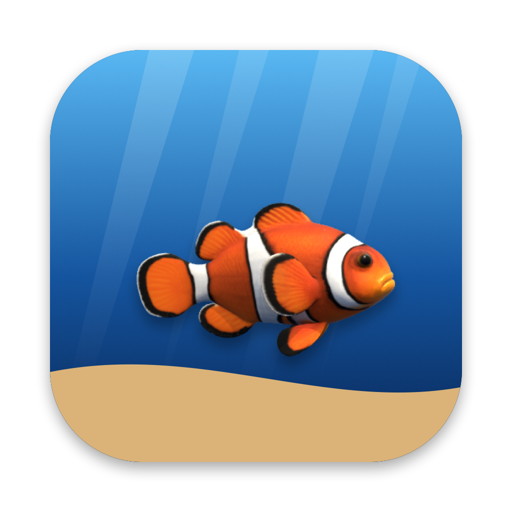
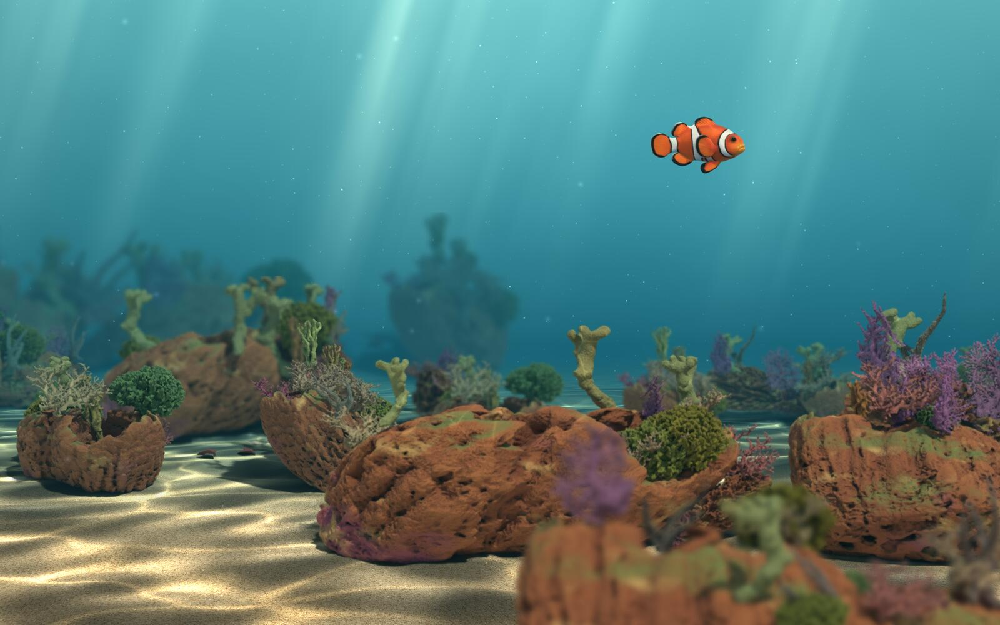
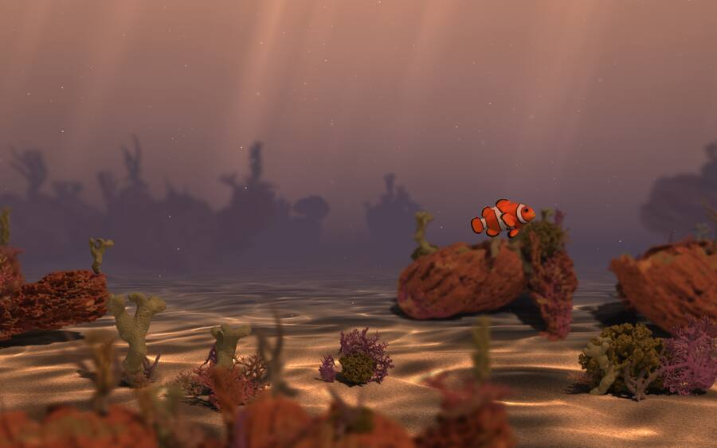
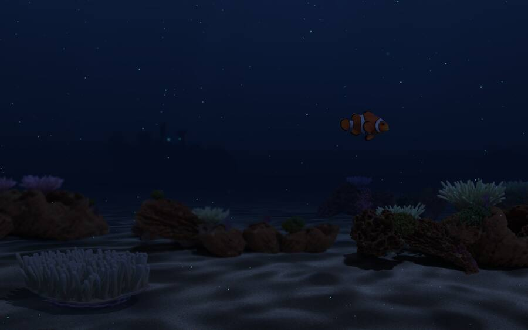
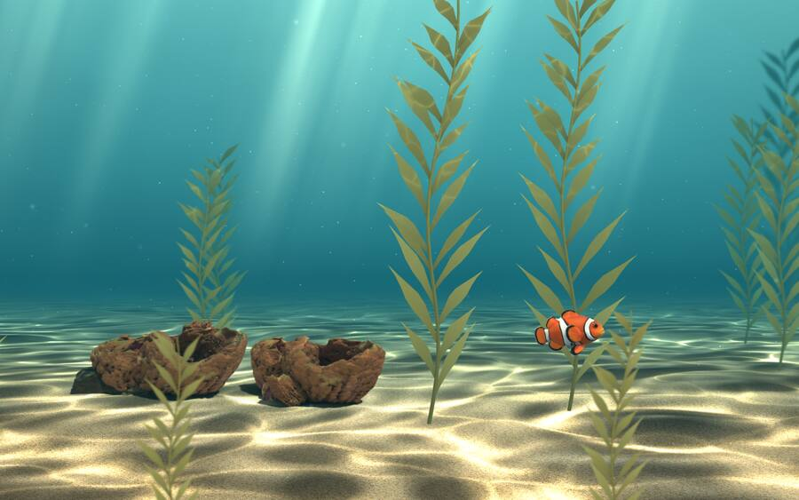
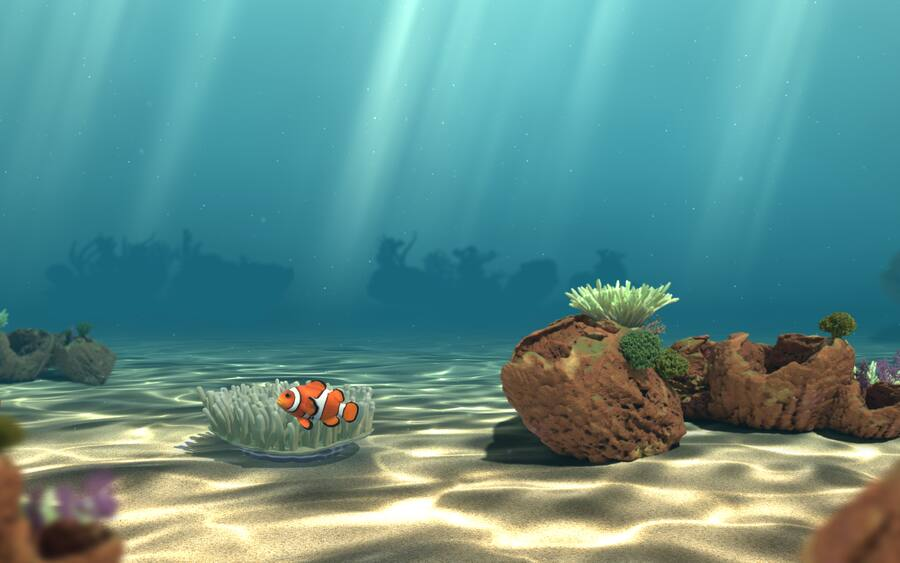
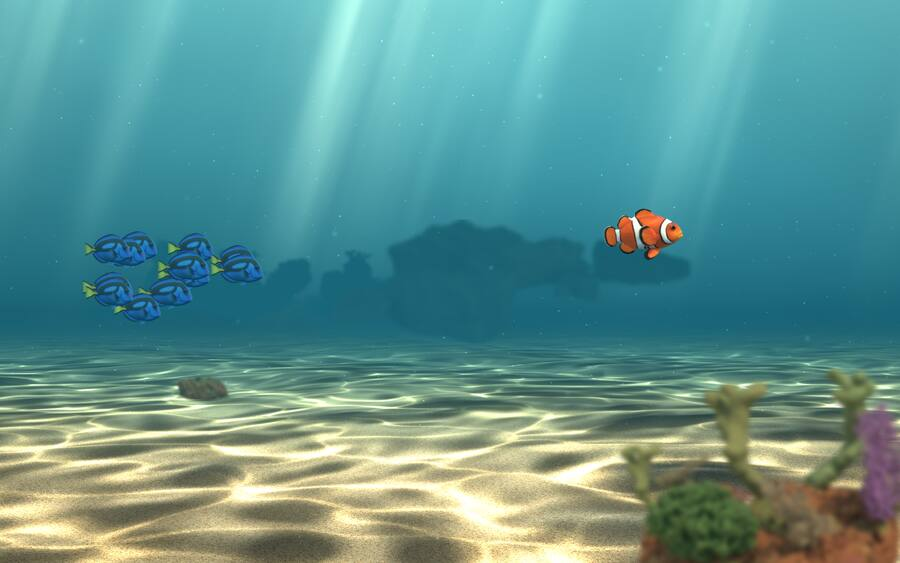

Fish Ocean: press kit
A clownfish lives behind your windows: a living reef wallpaper for the Mac.
In short
Fish Ocean is a living wallpaper for macOS. A clownfish lives in a coral reef behind your windows, and the light follows your time of day, from rosy dawns to moonlit nights with glowing plankton. Free on the Mac App Store, with a one-time Full Ocean unlock. No subscription, no ads.
Facts
- App
- Fish Ocean
- Developer
- A.M.Y.Z (solo developer)
- Released
- October 2026
- Platform
- macOS 13 or later · Apple silicon and Intel
- Price
- Free, with a one-time Full Ocean in-app purchase (US price at launch: $2.99)
- Category
- Entertainment
- App Store
- apps.apple.com/app/id6816492901
About
A clownfish lives on your Mac, behind your windows.
Its coral reef follows your time of day: rosy dawns, bright turquoise days, orange sunsets and moonlit nights with glowing plankton. Glance at your desktop and there it is, swimming around its reef. The corals are based on Smithsonian 3D scans.
Free
- A living coral reef that follows your time of day
- Your clownfish at home in its reef
- A friend with Full Ocean can invite your fish to swim with theirs
Full Ocean (one-time purchase, no subscription)
- Set it free to travel endlessly through nine habitats: coral gardens, kelp forests, seagrass, shipwrecks, reef walls, sea caves, anemone fields, rocky reef and sandy flats
- It eats plankton and slowly grows
- Schools of blue tangs drop by
- Invite a friend’s fish to swim with yours, live on both desktops. Add friends by code (needs iCloud); your friend doesn’t need Full Ocean
Made for Mac
- One ocean across all your displays
- Lowers its frame rate on battery and pauses when your desktop is covered
- See its live CPU and memory use in Settings
- No ads, no subscription
Images








Full-size screenshots (2880 × 1800) on request.